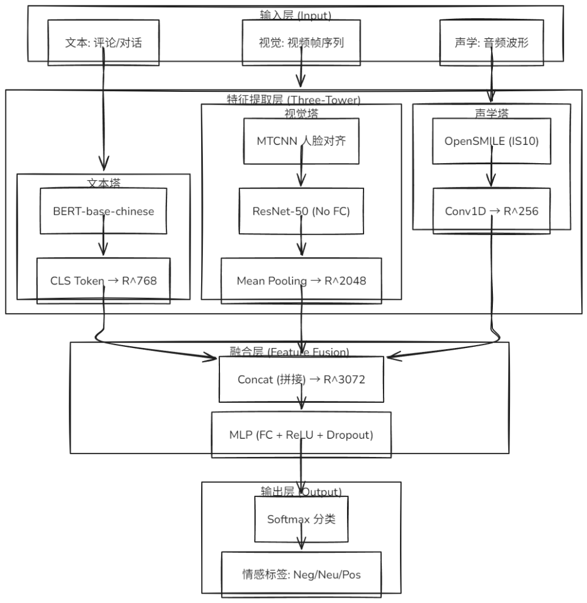

基于多模态情感分析的研究和应用
本科毕业设计开题报告
成都信息工程大学计算机学院
答辩人：梁嘉轩 指导老师：冯翱
目录
- 课题背景与意义
- 国内外研究现状
- 数据集介绍（CH-SIMS）
- 核心技术路线（三塔架构）
- 特征提取详解
- 融合机制与分类器
- 实验设计（含消融实验）
- 预期产出与计划
1. 课题背景与意义
研究背景： * 单模态方法难以准确识别反讽、双关等复杂情感表达 * 表情包与文字含义常存在矛盾，单一信息源易产生误判 * 短视频平台用户规模突破10亿，多模态数据成为主流 * 中文语境下的隐晦表达缺乏专用研究数据集
研究意义： * 互补性：文本语义、面部表情、声调韵律三通道相互印证 * 鲁棒性：单一模态缺失或受噪声干扰时，其他模态可补充 * 应用前景：舆情监控、智能客服、心理健康分析、人机交互
2. 国内外研究现状
发展历程： * 早期：简单拼接 (Early/Late Fusion)。 * 中期：双流网络 + 注意力机制 (Attention)。 * 当前：Transformer & 大模型 (CLIP, ViT, BERT)。
目前挑战： * 模态间的语义对齐（Alignment）。 * 异构数据的特征融合效率。 * 中文多模态数据集稀缺。
3. 数据集介绍：CH-SIMS
CH-SIMS（Chinese Single- and Multi-modal Sentiment）是首个中文多模态情感数据集。
| 统计项 | 训练集 (Train) | 验证集 (Val) | 测试集 (Test) | 总计 |
|---|---|---|---|---|
| 样本数 | 1,368 | 456 | 457 | 2,281 |
| 比例 | 60% | 20% | 20% | 100% |
数据特性： * 来源：电影、电视剧片段（非受控环境，含噪声）。 * 标注：每一样本包含 (Text, Visual, Audio, Multimodal) 4个独立标签。 * 不平衡性：正负样本分布不均，需在 Loss 计算时引入类别权重 (Class Weights)。
3.1 CH-SIMS 预处理策略
| 步骤 | 操作 | 目的 |
|---|---|---|
| 时序对齐 | 使用官方预对齐特征（Word-level Align） | 消除模态间时间偏移 |
| 帧率统一 | 视频→15 FPS，音频→16kHz | 建立统一采样基准 |
| 人脸检测 | MTCNN 关键点定位 + 仿射变换 | 确保面部区域一致性 |
| 数据清洗 | 过滤静音片段 / 黑帧 / 遮挡面部 | 排除无效样本 |
4. 核心技术路线：三塔架构

4.1 可行性分析：软硬件环境
硬件环境（Hardware）： * GPU：NVIDIA GeForce RTX 3060 Laptop (6GB) / 或 实验室服务器 (Tesla V100/A100) * 内存：16GB DDR4 / 32GB * 存储：1TB SSD (保证视频数据读写速度)
软件栈（Software Stack）： * 框架：PyTorch 2.0 + CUDA 11.8 * 核心库：Transformers (HuggingFace), OpenCV, Torchaudio * 工具：OpenSMILE (音频特征提取), FFmpeg (视频预处理)
4.2 风险控制与应对策略
- 若 显存不足，将采用：
- Gradient Accumulation（梯度累积）：小批量多次累积梯度
- Freeze Backbone（冻结预训练层）：只训练分类头
- Mixed Precision Training（混合精度）：FP16 加速训练
- 若 数据不平衡，将采用：
- Class Weights（类别权重）：Loss 加权
- Oversampling（过采样）：增加少数类样本
5. 特征提取详解：文本塔
模型：bert-base-chinese
处理流程： 1. 分词：使用 BertTokenizer 处理中文文本 2. 编码：输入 BERT 获取隐藏状态 3. 取特征：[CLS] token → \(T \in \mathbb{R}^{768}\)
# 伪代码示例
output = bert_model(input_ids, attention_mask)
text_feat = output.last_hidden_state[:, 0, :] # [CLS]5.1 特征提取详解：视觉塔
核心痛点：为何选择 MTCNN 而非 YOLO？
| 维度 | YOLO | MTCNN |
|---|---|---|
| 定位目标 | 通用目标检测 | 专用人脸任务 |
| 输出内容 | Bounding Box | BBox + 5关键点 |
| 对齐能力 | 无 | 眼/鼻/嘴对齐 |
| 下游任务 | 分类/分割 | 表情识别关键 |
结论：MTCNN 的 5-point landmarks 可直接用于人脸仿射变换，确保表情特征在空间上严格对齐。
5.2 视觉塔处理流程
流程： 1. 人脸检测：MTCNN 检测并定位 5 关键点 2. 仿射对齐：基于关键点进行仿射变换，归一化至 224×224 3. 特征提取：ResNet-50（ImageNet 预训练） 4. 时序聚合：Mean Pooling over frames
\[ V = \frac{1}{N}\sum_{i=1}^{N} \text{ResNet}(\text{Align}(f_i)) \in \mathbb{R}^{2048} \]
5.3 特征提取详解：声学塔
工具链：OpenSMILE / Librosa
特征类型： - MFCC（13维）：捕捉频谱包络 - Chroma（12维）：音高分布 - Spectral Contrast（7维）：频谱对比度
编码器：Conv1D (Kernel=3, Stride=1, Channels=128)
\[ A = \text{MeanPool}(\text{Conv1D}(\text{Features})) \in \mathbb{R}^{256} \]
6. 融合机制与分类器
特征拼接（Early Fusion）： \[ F = [T; V; A] \in \mathbb{R}^{768 + 2048 + 256} = \mathbb{R}^{3072} \]
分类器： \[ \hat{y} = \text{Softmax}(\text{FC}(\text{Dropout}(F, p=0.3))) \]
防过拟合策略： - Dropout (\(p=0.3\))：随机丢弃神经元 - L2 正则化 (\(\lambda = 10^{-4}\)) - 早停法 (Patience = 10 epochs)
7. 实验设计：消融实验
消融实验（Ablation Study） 量化证明模态互补性：
| 实验组 | 输入模态 | 预期作用 |
|---|---|---|
| Baseline-T | 文本 | 文本独立性能基线 |
| Baseline-V | 视觉 | 视觉独立性能基线 |
| Baseline-A | 声学 | 声学独立性能基线 |
| Fusion-TV | 文本+视觉 | 验证 T-V 互补性 |
| Fusion-TA | 文本+声学 | 验证 T-A 互补性 |
| Fusion-VA | 视觉+声学 | 验证 V-A 互补性 |
| Full Model | 三模态 | 完整融合效果 |
7.1 消融实验：预期结论
核心假设验证：
- 单模态有效性：每个模态对最终性能有独立贡献
- 正向互补性：\(\text{Acc}_{\text{TV}} > \max(\text{Acc}_T, \text{Acc}_V)\)
- 三模态最优：\(\text{Acc}_{\text{Full}} > \text{Acc}_{\text{any pair}}\)
评价指标： - Accuracy - Weighted F1-Score - MAE（Mean Absolute Error，针对回归任务）
8. 预期产出与计划
预期产出： * 完整的多模态情感分析模型源码（PyTorch） * 一个系统演示界面 * 毕业设计论文一篇 * 实验对比数据报告（含消融实验）
进度安排： | 阶段 | 时间 | 任务 | | ——– | —– | ———————— | | 数据准备 | 1-2月 | CH-SIMS 预处理与特征提取 | | 模型搭建 | 3月 | 三塔架构实现与初步训练 | | 实验调优 | 4月 | 参数调优与消融实验 | | 论文撰写 | 5月 | 论文撰写与答辩准备 |
参考文献 (References)
- [CH-SIMS] Yu, W., Xu, H., et al. “CH-SIMS: A Chinese Multimodal Sentiment Analysis Dataset with Fine-grained Annotation of Modality.” ACL 2020.
- [BERT] Devlin, J., et al. “BERT: Pre-training of Deep Bidirectional Transformers for Language Understanding.” NAACL 2019.
- [ResNet] He, K., et al. “Deep Residual Learning for Image Recognition.” CVPR 2016.
- [OpenSMILE] Eyben, F., et al. “openSMILE: the Munich versatile and fast open-source audio feature extractor.” ACM MM 2010.
- [Multimodal Survey] Poria, S., et al. “Multimodal sentiment analysis: A generic review.” IEEE Intelligent Systems, 2017.

请各位老师批评指正
成都信息工程大学计算机学院